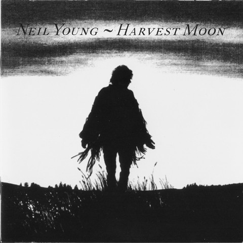

CD
Harvest Moon
Neil Young
Media: — · Sleeve: —
—
Personal
Discogs SuggestedCA$9.25
Discogs MedianCA$9.25
Discogs HighCA$9.25
- Physical Copy ID
- BB-CD-3423
- Year
- 1992
- Label
- Reprise Records
- Catalog #
- W2 45057
- Country
- CACanada
- Genre / Style
- Rock · Folk Rock